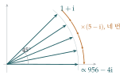

STEP III 1987, 문제 3
계속 읽기 전에 문제를 먼저 읽어 보자. 문제는 STEP Support Programme의 문제 데이터베이스에 있다: step.maths.org/questions/87-s3-q3
도입
1706년 런던의 수학자 존 마친(John Machin)은 손 계산만으로 \(\pi\)를 소수점 아래 \(100\)자리까지 구했다. 그 전에는 누구도 그 근처에조차 가지 못했다. 그의 비결은 소문항 (ii)의 공식으로, 이 공식은 \(\frac\pi4\)를 탄젠트 값이 아주 작은 분수인 각들로 나타낸다. 분수가 작으면 급수(series) \(\tan^{-1}x = x - \frac{x^3}{3} + \frac{x^5}{5} - \cdots\)가 매우 빠르게 수렴(converge)하며, 마친의 공식과 그 변형들은 컴퓨터와 2.6 절의 방법이 등장하기 전까지 두 세기 반 동안 \(\pi\)를 계산하는 표준적인 방법이었다.
이 공식은 삼각함수 항등식이 빚어낸 기적처럼 보인다. 그러나 이 문제는 이것이 사실 복소수의 곱셈에 관한 사실임을 보여 준다. 복소수를 곱하면 편각(argument)이 더해진다. 성분이 정수인 복소수들의 곱셈 한 번으로 전체가 증명된다.
시작하기 전에
\(5 - \mathrm{i}\)의 편각은 무엇인가? \(1 + \mathrm{i}\)의 편각은? 복소수를 곱하면 편각은 어떻게 되는가?
\(\arg(5 - \mathrm{i}) = -\tan^{-1}\frac15\)로 작은 음의 각이고, \(\arg(1 + \mathrm{i}) = \frac\pi4\)이다. 복소수를 곱하면 절댓값(modulus)은 곱해지고 편각은 (\(2\pi\)의 정수배 차이를 제외하면) 더해진다. 따라서 \[\arg\bigl((5 - \mathrm{i})^4(1 + \mathrm{i})\bigr) = \frac\pi4 - 4\tan^{-1}\frac15 \quad\text{(경우에 따라 } 2\pi\text{의 정수배를 더함)}.\] 이 곱을 직접 계산하여 편각을 다른 방법으로 구할 수 있다면 항등식을 얻는다.
차근차근 풀기
단계 1 절댓값의 범위
상한(upper bound)을 보이려면 양변을 제곱해 보라. 하한(lower bound)을 보이려면 \(|x|\cos\alpha + |y|\sin\alpha\)를 두 벡터의 내적(dot product)으로 생각해 보라.
상한: \((|x| + |y|)^2 = x^2 + y^2 + 2|x||y| \geq x^2 + y^2 = |z|^2\)이고 양변이 모두 음이 아니므로 \(|z| \leq |x| + |y|\)이다.
하한: \(|x|\cos\alpha + |y|\sin\alpha\)는 길이가 \(|z|\)인 벡터 \((|x|, |y|)\)와 단위벡터 \((\cos\alpha, \sin\alpha)\)의 내적이다. 내적은 두 벡터의 길이의 곱보다 클 수 없으므로 이 값은 \(|z|\) 이하이다. (대수적으로는 \(|z|^2 - (|x|\cos\alpha + |y|\sin\alpha)^2 = (|x|\sin\alpha - |y|\cos\alpha)^2 \geq 0\)이다.)■
단계 2 핵심이 되는 곱셈
\((5 - \mathrm{i})^2\)을 계산하고, 그것을 다시 제곱한 뒤, \(1 + \mathrm{i}\)를 곱하라.
\((5 - \mathrm{i})^2 = 25 - 10\mathrm{i} - 1 = 24 - 10\mathrm{i}\)이다. 그러면 \((24 - 10\mathrm{i})^2 = 576 - 480\mathrm{i} - 100 = 476 - 480\mathrm{i}\)이다. 마지막으로 \[(476 - 480\mathrm{i})(1 + \mathrm{i}) = 476 + 476\mathrm{i} - 480\mathrm{i} + 480 = 956 - 4\mathrm{i}.\]
이제 편각을 비교하라. \(956 - 4\mathrm{i}\)의 편각은 무엇인가? \(2\pi\)의 정수배가 더 붙지 않는다고 어떻게 확신할 수 있는가?
\(956 - 4\mathrm{i} = 4(239 - \mathrm{i})\)이므로 편각은 \(-\tan^{-1}\frac{1}{239}\)이다. 따라서 어떤 정수 \(k\)에 대하여 \[\frac\pi4 - 4\tan^{-1}\frac15 = -\tan^{-1}\frac{1}{239} + 2k\pi\] 이다. 그런데 \(0 < \tan^{-1}\frac15 < \frac15\)이므로 좌변은 \(\frac\pi4 - \frac45\)와 \(\frac\pi4\) 사이, 즉 대략 \(-0.02\)와 \(0.79\) 사이에 있고, 우변에서 \(2k\pi\)를 뺀 부분은 \(-0.005\)와 \(0\) 사이에 있다. \(2\pi\)는 이 차이보다 훨씬 크므로 \(k = 0\)이다. 정리하면 \[\frac\pi4 = 4\tan^{-1}\frac15 - \tan^{-1}\frac{1}{239}. \qed\] 그림 5.1.1은 무슨 일이 일어났는지 보여 준다. \(45^\circ\)에서 출발하여 \(5 - \mathrm{i}\)를 한 번 곱할 때마다 시계 방향으로 약 \(11.3^\circ\)씩 회전(rotation)하고, 네 번 곱하고 나면 실수축을 겨우 \(0.24^\circ\) 지나친다.

단계 3 두 번째 공식
앞의 경우에서 유추하면, 이번에는 어떤 곱을 계산해야 하는가?
\((4 + \mathrm{i})^3(20 + \mathrm{i})(1985 + \mathrm{i})\)를 생각하자. 이 수의 편각은 \(3\tan^{-1}\frac14 + \tan^{-1}\frac{1}{20} + \tan^{-1}\frac{1}{1985}\)이다. 이제 \((4 + \mathrm{i})^2 = 15 + 8\mathrm{i}\)이므로 \((4 + \mathrm{i})^3 = (15 + 8\mathrm{i})(4 + \mathrm{i}) = 52 + 47\mathrm{i}\)이다. 그러면 \((52 + 47\mathrm{i})(20 + \mathrm{i}) = 1040 + 52\mathrm{i} + 940\mathrm{i} - 47 = 993 + 992\mathrm{i}\)이고, \[(993 + 992\mathrm{i})(1985 + \mathrm{i}) = (1971105 - 992) + (993 + 1969120)\mathrm{i} = 1970113 + 1970113\mathrm{i}.\] 실수부분과 허수부분이 같으므로 편각은 \(\frac\pi4\)이다. 세 각은 모두 작은 양수이므로(그 합은 \(3 \cdot \frac14 + \frac1{20} + \frac{1}{1985} < 1 < 2\pi\)보다 작다) \(2\pi\)의 정수배를 걱정할 필요가 없고, 공식이 성립한다.■
돌아보기
곱셈에서 편각은 더해진다. 이 하나의 사실이 가우스 정수의 곱을 각 사이의 항등식으로 바꾸어 주었다.
\(2\pi\)의 정수배에 주의하라. 편각은 \(2\pi\)의 정수배 차이를 제외하고만 정해지므로, 각 항등식마다 크기를 어림하여 그 정수배를 확정해야 했다.
정수가 일을 한다. 모든 계산은 정수로 이루어졌고, \(\pi\)에 대한 항등식은 근사 없이 정확하게 나왔다.
숨은 수학
마친의 공식은 왜 계산에 그토록 유용할까? 급수 \(\tan^{-1}x = x - \frac{x^3}{3} + \frac{x^5}{5} - \cdots\)는 \(|x| \leq 1\)에서 수렴하지만, \(x = 1\)에서는 고통스러울 만큼 느리게 수렴한다. \(\frac\pi4\)를 소수점 아래 세 자리까지 구하려면 \(1 - \frac13 + \frac15 - \cdots\)의 항이 약 천 개나 필요하다. \(x = \frac15\)이면 각 항이 앞의 항보다 약 \(25\)배씩 작아져서 항 하나당 대략 \(1.4\)자리를 얻고, \(x = \frac{1}{239}\)이면 항 하나당 약 \(4.8\)자리를 얻는다. 마친의 \(100\)자리 계산에는 첫 번째 급수의 항 약 \(70\)개와 두 번째 급수의 항 \(20\)개 정도만 필요했다. 1873년 William Shanks는 마친형 공식을 이용해 \(707\)자리를 계산하느라 수년을 계산에 쏟았는데, 1944년에 그가 \(528\)번째 자리에서 실수를 했고 그 뒤의 자리는 모두 틀렸다는 사실이 밝혀졌다.
다시 만나는 가우스 정수
\(a\), \(b\)가 정수일 때 \(a + b\mathrm{i}\) 꼴의 수는 1.6 절에서 다룬 가우스 정수(Gaussian integers)이다. \(5 - \mathrm{i}\)가 이렇게 잘 들어맞는 이유는 인수분해(factorisation)에 있다. \(239^2 + 1 = 57122 = 2 \times 13^4\)이고, 이를 가우스 정수에서 쓰면 \((239 + \mathrm{i})(239 - \mathrm{i}) = (1 + \mathrm{i})(1 - \mathrm{i})\,(3 + 2\mathrm{i})^4(3 - 2\mathrm{i})^4\)가 되며, \(5 - \mathrm{i} = (1 - \mathrm{i})(3 + 2\mathrm{i})\)도 같은 가우스 소수(Gaussian primes)들로 이루어져 있다. 마친형 공식을 찾는 일은 사실 \(n^2 + 1\) 꼴의 수를 인수분해하는 문제이다. 1899년 Carl Størmer는 바로 이 아이디어를 이용하여, \(a\), \(b\), \(m\), \(n\)이 정수일 때 \(\frac\pi4 = a\tan^{-1}\frac1m + b\tan^{-1}\frac1n\) 꼴의 공식은 마친의 공식과 오일러(Euler), Hermann, Hutton이 찾은 세 공식, 이렇게 네 개뿐임을 증명했다.
회전
절댓값이 \(1\)인 복소수를 곱하는 것은 평면의 회전이다. 그래서 복소수는 이 장 뒷부분의 기하학에서부터 전기공학의 교류, 양자역학의 파동함수에 이르기까지 회전과 각이 관련된 모든 것을 나타내는 자연스러운 언어가 된다. 4.2 절에서는 \(\tan^{-1}\)의 덧셈정리를 교묘한 치환으로 얻었지만, 여기서는 복소수의 곱셈에서 얻었다. 두 가지는 같은 사실을 서로 다른 쪽에서 본 것이다.
사고 기술
각의 합 사이의 항등식은 곱의 편각 사이의 항등식이다. 곱을 정확하게 계산하고 그 편각을 읽어 내라.
복소수의 계산은 기계적이고 정확한 반면, 역삼각함수(inverse trigonometric functions)를 다루는 일은 실수하기 쉽다. 한쪽에서 다른 쪽으로 옮겨 생각하는 것이 증명에 이르는 가장 빠른 길일 때가 많다.
더 도전하기
사촌 격인 문제. STEP II 2000, 문제 4에 도전해 보라. 이 문제는 이 절과 같은 방법, 즉 복소수를 곱하고 편각을 읽어 내는 방법으로 \(\frac\pi4\)에 대한 또 다른 아크탄젠트 공식을 증명한다.
오일러의 공식. \((2 + \mathrm{i})(3 + \mathrm{i})\)를 생각하여 \(\tan^{-1}\frac12 + \tan^{-1}\frac13 = \frac\pi4\)임을 보여라.
Hutton의 공식. \(\frac\pi4 = 2\tan^{-1}\frac13 + \tan^{-1}\frac17\)임을 보여라.
항이 몇 개 필요할까? 마친의 공식으로 \(\pi\)를 소수점 아래 \(20\)자리까지 계산하려면 각 급수의 항이 몇 개씩 필요한지 어림해 보라. 그다음 계산기로 처음 몇 자리를 직접 계산해 보라.
더 읽을거리
Jonathan Borwein & Peter Borwein, Pi and the AGM (Wiley). 마친형 공식의 역사를 담고 있다.
Jörg Arndt & Christoph Haenel, Pi Unleashed (Springer). \(\pi\)를 계산하는 옛 방법과 새 방법을 생동감 있게 소개한다.
Tristan Needham, Visual Complex Analysis (Oxford University Press). 복소수를 기하학적으로 보는 데 가장 좋은 책이다. 제1장은 회전과 확대로서의 곱셈을 다룬다.